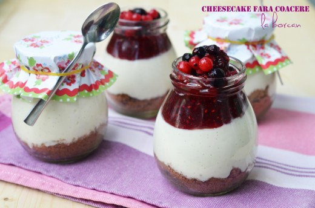
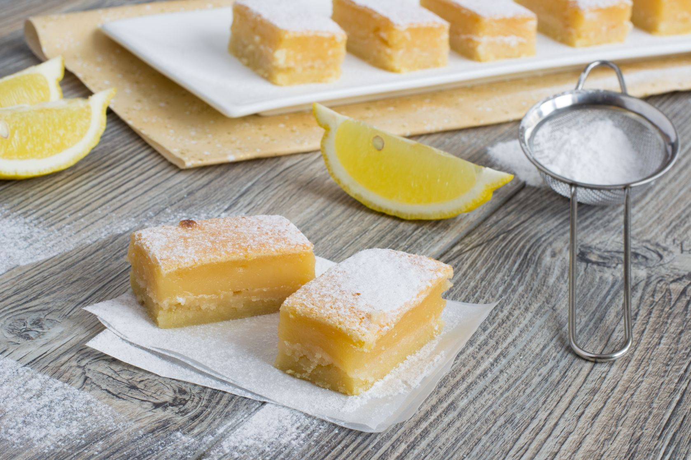

Ingrediente:
Briose
- 450 g zahar
- 200g faina
- 100g cacao
- 1 lingurita si jumatate de praf de copt
- 1 lingurita si jumatate de bicarbonat de sodiu
- 1 lingurita sare
- 2 oua mari
- 230ml lapte
- 110ml ulei vegetal
- 2 linguri esenta de vanilie
- 230ml apa fierbinte
Bezea:
- 8 albusuri de ou
- 450g zahar
- O jumatate lingurita praf tartar
- 2 lingurite esenta de vanilie
Briose de cacao cu bezea

- Incingeti cuptorul la 175 grade. Puneti forme de briose in doua tavi.
- Puneti zaharul, faina, cacao, bicarbonat, praf de copt si sare intr-un mixer si bateti la viteza mica.
- Intr-un bol amestecati ouale, laptele, uleiul si esenta de vanilie. Adaugati peste faina si bateti la o viteza medie pentru 3 minute.
Adaugati apa fiarta si amestecati usor pana se combina.
- Puneti compozitia in formele de briose 3 sferturi. Dati la cuptor pentru 18-20 de minute, testati cu scobitoarea sa iasa curata.
Luati din cuptor si lasati sa se raceasca in tava 10 minute. Apoi scoateti din tava si lasati sa se raceasca definitiv.
Bezeaua o pregatit astfel:
- Puneti ouale, zaharul si praful tartar la bain marie si mixati pana zaharul se dizolva si crema este calda, 3-4 minute.
- Dati la robot pentru 5-7 minute, crescand viteza treptat. Cand incepe sa luceasca si sa formeze tepi, adaugati esenta de vanilie si mixeaza cateva secunde.
- Puneti bezeaua intr-un posh cu cap rotund, larg si decorati briosele. Apoi cu o torta de bucatarie, caramelizati suprafata bezelei avand grija sa nu ardeti foita.
Ingrediente:
- 180g biscuiti digestivi
- o lingurita scortisoara macinata
- 80g unt
- 200g crema de branza
- 150g mascarpone
- 150g iaurt grecesc
- miezul de la o pastaie de vanilie
- 100g zahar pudra
- 100g dulceata de zmeura
Cheesecake fara coacere

- Dam biscuitii prin blender, pana sunt ca un pesmet mare, apoi adaugam untul topit si scortisoara, amestecam pana sunt bine omogenizate.
- Punem cate 3 linguri de amestec de biscuiti in fiecare borcan (sau distribuim amestecul de biscuiti in
mod egal intre cate borcane folosim) si batem usor borcanul de masa, pentru cu stratul de biscuiti sa fie uniform.
- Pentru crema, amestecam cu mixerul, la viteza medie, 2-3 minute, crema de branza si mascarpone (ambele trebuie sa fie la temperatura camerei si
bine scurse de lichidul pe care il lasa), apoi adaugam si iaurtul,
zaharul pudra si miezul de la batonul de vanilie si continuam sa amestecam pana crema e omogena si zaharul nu se mai simte deloc.
- Impartim crema de branza intre borcanele, peste stratul de biscuiti si din nou batem borcanelul de masa, pentru a uniformiza crema de branza.
- La final, nu ne ramane decat sa punem dulceata de zmeura in fiecare borcanel si sa ii punem capacul, apoi totul la frigider.
Ingrediente:
- 4 oua la temperatura camerei
- esenta de vanilie
- 150 g zahar
- 125 g unt moale
- 115 g faina 5
- 450 ml lapte caldut
- 50 ml suc de lamaie
- coaja razuita de la o lamaie
Prajitura inteligenta cu lamaie

- Preincalzeste cuptorul la 160° si unge cu unt o tava patrata de 20/20 cm sau una rotunda. Alege o tava nu foarte mare ca latime sau lungime, deoarece daca nu este suficient de inalt aluatul in tava, exista riscul sa nu se poata stratifica.
- Separa albusurile de galbenusuri si bate albusurile spuma, pana cand aceasta ramane pe paletele mixerului, atunci cand il ridici.
- Freaca galbenusurile cu zaharul pana obtii o consistenta cremoasa si usoara. Adauga untul si esenta de vanilie, amesteca pentru 1-2 minute, apoi adauga si incorporeaza faina.
- Adauga zeama si coaja de lamaie, apoi adauga laptele treptat, pana la omogenizare, urmat de albusurile batute.
- Albusurile trebuie amestecate cu o spatula, nu cu mixerul, si trebuie adaugate tot treptat, cat mai delicat.
- Nu trebuie sa omogenizezi aluatul, albusul trebuie sa ramana oarecum vizibil in compozitie, deci incorporeaza albusurile superficial.
- Toarna aluatul in tava de prajitura si da-o la cuptor pentru aproximativ o ora, sau pana ce se coloreaza auriu, iar prajitura trece testul scobitorii.
- Decoreaza prajitura cu zahar pudra.